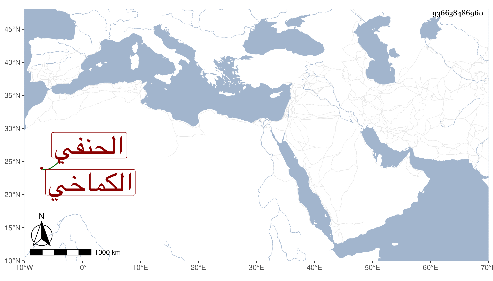

0902Sakhawi.DawLamic.ITO20230111-ara1.EIS1600.936638486960
Biography ID: 936638486960
455
محمد بن محمد بن عمر بن محمود المحب بن الشمس الكماخي الحنفي الماضي أبوه وولده إبراهيم . حفظ القرآن وكتبا وعرض واشتغل عند أبيه وسعد الدين ابن الديري وغيرهما كالسراج قاري الهداية وتزوج بابنته وناب في الحكم بل استقر بعد صهره في تدريس الظاهرية العتيقة وغيرها من جهاته وكان متميزا في الصناعة حسن الحظ جوده على الزين بن الصائغ ، لطيف العشرة والممازحة علي الهمة . مات قريب السبعين ظنا عن نحو الستين رحمه الله وإيانا .
